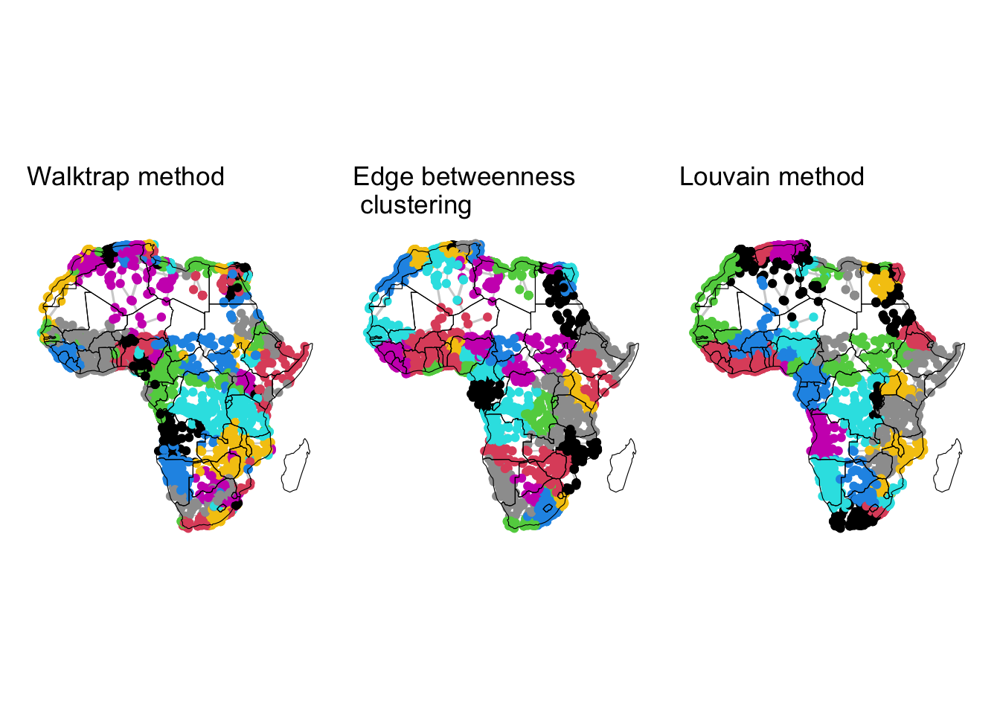
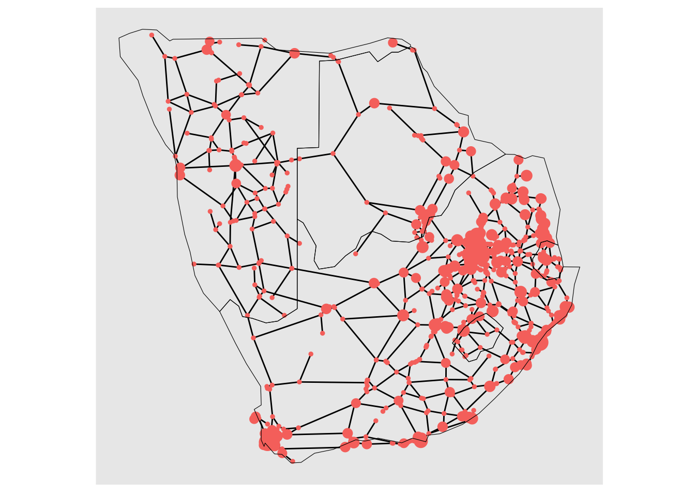

# Load required packages
library(igraph) # for network analysis
library(ggplot2) # for data visualization
library(ggraph) # for graph visualization
library(patchwork) # for arranging plots
library(tidygraph) # for tidy data handling with graphs
library(RColorBrewer) # for color palettes
library(rnaturalearth) # for natural earth map data
library(sf) # for spatial data manipulation4 Applications
4.1 Dependencies
We first clean the environment and load all the libraries required for this section.
Like before, we define the network of African roads from dataframes containing nodes and edges data.
# Read the CSV file containing network nodes data
df_nodes <- read.csv("https://raw.githubusercontent.com/CrmnCA/nets4gis/main/data/AfricaNetworkNodes.csv")
# Read the CSV file containing network edges data
df_edges <- read.csv("https://raw.githubusercontent.com/CrmnCA/nets4gis/main/data/AfricaNetworkEdges.csv")
# Create a network called 'g' from data frames 'df_edges' and 'df_nodes'
# Make the netwrok is undirected (directed = FALSE)
g <- graph_from_data_frame(d = df_edges,
vertices = df_nodes,
directed = FALSE)For visualisations, we will load the shapes of the African countries as a spatial feature object, with the ne_download function. This will be used as a basemap
# Download world map data with specified parameters
world <- ne_download(scale = "small", category = "cultural", type = "admin_0_countries", returnclass = "sf")Reading layer `ne_110m_admin_0_countries' from data source
`/private/var/folders/79/65l52xsj7vq_4_t_l6k5bl2c0000gn/T/Rtmpt88c2l/ne_110m_admin_0_countries.shp'
using driver `ESRI Shapefile'
Simple feature collection with 177 features and 168 fields
Geometry type: MULTIPOLYGON
Dimension: XY
Bounding box: xmin: -180 ymin: -90 xmax: 180 ymax: 83.64513
Geodetic CRS: WGS 84# Define a vector of target countries
target_countries <- c("DZA", "AGO", "BEN", "BWA", "BFA", "BDI", "CMR", "CPV", "CAF", "TCD", "COM", "COG", "COD", "CIV", "DJI", "EGY", "GNQ", "ERI", "ETH", "GAB", "GMB", "GHA", "GIN", "GNB", "KEN", "LSO", "LBR", "LBY", "MDG", "MLI", "MWI", "MRT", "MUS", "MYT", "MAR", "MOZ", "NAM", "NER", "NGA", "REU", "RWA", "STP", "SEN", "SYC", "SLE", "SOM", "ZAF", "SSD", "SDN", "SWZ", "TZA", "TGO", "TUN", "UGA", "ESH", "ZMB", "ZWE")
# Subset the world map data to include only the target countries
world_subset <- world[world$SOV_A3 %in% target_countries, ]5 Community detection
A network displays community structure if the nodes can be grouped into sets such that the nodes within each set are densely connected. For example, in the case of a social network formed by the students in a classroom, we would expect that small groups of friends form within the overall network, where relationships among members of a group are stronger than to everyone else in the classroom. Detecting or searching communities within in a network is a fundamental problem in network analysis, which has attracted much attention in the past decades (Fortunato and Newman 2022). While there are different methods to detect communities, below we review four of them which have been widely used and studied. These are walktrap (Pons and Latapy 2005), edge-betweenness (Girvan and Newman 2002) and hierarchical clustering (Blondel et al. 2008). Each method defines communities differently, and the choice of method depends on which aspect of communities is emphasised in a particular application.
5.1 Walktrap
This algorithm relies on the concept of random walks on networks. Random walks are sequences of nodes, chosen by following a randomly chosen path. The underlying assumption of the walktrap method is that nodes encountered in a given random walk are more likely to be part of the same community.
The algorithm starts by treating each node as its own community. Then, it performs a series of short random walks on the network, where the length of these walks has to be specified by the user. After performing the random walks, the algorithm calculates a similarity measure between each pair of nodes. This measure is based on the idea that if two nodes are often encountered together during random walks, they are likely part of the same community. Nodes that have high similarity are merged into larger communities. This merging process is hierarchical and agglomerative, starting with individual nodes and progressively combining them. As communities are merged, the algorithm often aims to maximise a measure called modularity, which quantifies the strength of the division of the network into communities. High modularity indicates a good community structure, where more edges fall within communities than between communities. The process continues until the entire network is merged into a single community or until a stopping criterion, like a modularity threshold, is met. Depending on the implementation, the algorithm may return a hierarchical structure of communities, allowing the user to explore different levels of granularity in the community structure.
In R, the walktrap method is implemented via the igraph function cluster_walktrap(), with key parameters including the network of interest as an igraph object, the length of the random walks, and a membership parameter, which is a boolean variable indicating whether to calculate membership based on the highest modularity score, with True as the default. Below, we apply the walktrap method to the African road network and save the result in the variable g_wt:
g_wt <- cluster_walktrap(graph = g, steps = 3, membership = T)We can get the membership of each node as well the modularity score according to the solution based on random walks of length 3. We save the results with the name member_g_wt and mod_g_wt:
member_g_wt <- membership(g_wt)
modularity_g_wt <- modularity(g_wt)We can plot the network based on the found communities. We will plot the network as before, but color the nodes based on the communities found using the walktrap algorithm.
custom_layout <- data.frame(
name = df_nodes$agglosName, # Node names from the graph
x = df_nodes$x , # Custom x-coordinates
y = df_nodes$y ) # Custom y-coordinates
plot_wt <- ggraph(as_tbl_graph(g), custom_layout) + # basic graph plot with custom layout
geom_edge_link(color = "gray80", alpha=0.9, aes(width = E(g)$l*0.1)) + # custom edges
scale_edge_width(range = c(.1, 0.7)) + # scale edge size
geom_node_point(aes(color = member_g_wt, size = V(g)$size)) + # custom nodes
scale_size_continuous(range = c(.3, 4)) + # scale node size
scale_color_identity() + # scale node color (not relevant for this plot, but could be for others)
theme(legend.position = "none", panel.background=element_rect(fill = NA, colour = NA)) + # map legend and background color
geom_sf(data = world_subset, fill = NA, color = "black") + # basic map plot
ggtitle("Walktrap method")5.2 Edge betweenness community detection
The edge-betweenness community detection method identifies communities within a network by focusing on the edges that connect different communities. It works by progressively removing edges that act as bridges between groups of nodes, from higher to lower betweenness centrality. As high-betweenness edges are removed, the network breaks down into smaller, more cohesive subgroups or communities. This method is particularly useful for finding natural divisions within a network, though it can be computationally intensive for large networks.
The algorithm starts by computing the betweenness centrality for all edges in the network. Edges with high betweenness are likely to be those that connect different communities. Then, the edge with the highest betweenness centrality is removed from the network. This step effectively “cuts” the bridge between communities. After removing the edge, the betweenness centrality for the remaining edges is recomputed since the removal of one edge may change the shortest paths in the network, affecting the betweenness centrality of other edges. Edges with the highest betweenness centrality keep being removed until all edges have been removed or until the network breaks down into the desired number of communities.
In R, the edge betweenness community detection method is implemented via the igraph function cluster_edge_betweenness(). The key parameters are the network of interest as an igraph object and a membership parameter, a boolean variable indicating whether to calculate membership based on the highest modularity score, with True as the default. Below, we apply the edge betweenness method to the African road network and save the result in the variable g_eb:
g_eb <- cluster_edge_betweenness(graph = g, membership = T)Once again, we can get the membership of each node according to the solution based on edge betweenness. We save the results with the name member_g_eb:
member_g_eb <- membership(g_eb)Then, we generate a plot of the results. We include the plot in Figure Figure 5.1.
plot_eb <- ggraph(as_tbl_graph(g), custom_layout) + # basic graph plot with custom layout
geom_edge_link(color = "gray80", alpha=0.9, aes(width = E(g)$l*0.1)) + # custom edges
scale_edge_width(range = c(.1, 0.7)) + # scale edge size
geom_node_point(aes(color = member_g_eb, size = V(g)$size)) + # custom nodes
scale_size_continuous(range = c(.3, 4)) + # scale node size
scale_color_identity() + # scale node color (not relevant for this plot, but could be for others)
theme(legend.position = "none", panel.background=element_rect(fill = NA, colour = NA)) + # map legend and background color
geom_sf(data = world_subset, fill = NA, color = "black") + # basic map plot
ggtitle("Edge betweenness\n clustering")5.3 Louvain method
The Louvain method of multi-level clustering works by finding communities in such a way that the modularity of the network is maximised. The algorithm works in two phases: first, each node starts in its own community, and nodes are iteratively moved to neighboring communities if the move increases modularity. This phase continues until no further improvement is possible. In the second phase, the network is compressed by treating each community found in the first phase as a single node, creating a new, smaller network. The two phases are then repeated on this simplified network, refining the community structure at each level. The process continues until modularity no longer increases, resulting in a hierarchical clustering that reflects the community structure within the network.
On R, the Louvain method is implemented via the cluster_louvain function, where the arguments are the graph and the resolution. Higher resolution values will yield a larger number of smaller communities, while lower values will yield a smaller number of larger communities.
g_mlc <- cluster_louvain(graph = g, resolution = 1)We get the membership of each node according to the communities found by the Louvain’s multi-level clustering method. The results are saved with the name member_g_mlc:
member_g_mlc <- membership(g_mlc)We can then generate a plot of the results:
plot_mlc <- ggraph(as_tbl_graph(g), custom_layout) + # basic graph plot with custom layout
geom_edge_link(color = "gray80", alpha=0.9, aes(width = E(g)$l*0.1)) + # custom edges
scale_edge_width(range = c(.1, 0.7)) + # scale edge size
geom_node_point(aes(color = member_g_mlc, size = V(g)$size)) + # custom nodes
scale_size_continuous(range = c(.3, 4)) + # scale node size
scale_color_identity() + # scale node color (not relevant for this plot, but could be for others)
theme(legend.position = "none", panel.background=element_rect(fill = NA, colour = NA)) + # map legend and background color
geom_sf(data = world_subset, fill = NA, color = "black") + # basic map plot
ggtitle("Louvain method")In Figure Figure 5.1, we visualise the results of the three community detection methods, i.e. walktrap, edge betweenness and the Louvain method. The results reflect the fact that nodes that are geographically close and are part of densely connected clusters, generally belong to the same community, regardless of the method used. There is some degree of correspondance between the detected communities and the African countries.
plot_wt + plot_eb + plot_mlc

5.4 Introduction
The term percolation normally refers to the process whereby a fluid moves slowly through a porous material, for example, the percolation of rain water through rocks gives rise to aquifers. The study and modelling of this infiltration process in physics, chemistry and material science is known as percolation theory. If you think about it, a rock can be modelled as a three-dimensional lattice (if the rock was cube-shaped, this lattice would be like a Rubik cube but instead of being \(3 \times 3\times 3\), it is \(n\times n \times n\)). Then, the pores in the rock would be represented by “open sites” in this lattice (this would correspond to missing pieces in the Rubik cube) and the bits of the rock where there is material and therefore, no chance for the water to go through, would be represented by “closed sites” (this would correspond to pieces in the Rubik cube that are actually present). A typical question in percolation theory would then be as follows. If sites may be open with probability \(p\) or closed with probability \(1-p\) and these probabilities are assumed to be independent for each site, what is the probability that the water can go through the top to the bottom of the rock for a given value of \(p\)?
In recent decades, the mathematical study of percolation has been applied in a more general way, to understand the behavior of connected clusters or pathways in any system that can be modelled as a lattice or as a network. While the formulation of the percolation models varies slightly from lattices to networks, it follows the same principles. For example, let’s consider the spread of a certain pandemic, where contagion between two humans may take place with probability \(p\) if an infected individual spends more than 10 minutes at less than 2 meters away from a healthy one. Then, we can think of the pandemic as a fluid moving slowly, but instead of going through a porous rock, it goes through a social network of people. The people can be modelled as the nodes of the social network, and edges are present between two individuals if they spend long enough in close physical contact. Then, each edge or connection has an associated probability of contagion \(p\). Applying percolation theory, we could answer the question of “what are the chances that the pandemic makes its way from city A to city B given the structure of the network and the fact that the probability of contagion is \(p\)?”
Percolation theory can therefore be used in a variety of contexts to better understand the properties of a system characterised by the connections between its components. Here, we use percolation models to improve our understanding of the structure and resilience of the African road network.
As before, we start by loading the data corresponding to the nodes and edges of the African road network:
# Read CSV data for edges from a specified URL
df_edges <- read.csv("./data/AfricaNetworkEdges.csv")
# Read CSV data for nodes from a specified URL, specifying UTF-8 encoding for special characters
df_nodes <- read.csv("./data/AfricaNetworkNodes.csv", encoding='UTF-8')In order to ensure timely completion of this workshop, we will use a subset of the African network, specifically focusing on nodes from the South region. This adjustment is necessary as running the code on the entire network would exceed the allocated time frame. However, you are encouraged to explore running the code on the complete network at your own convenience.
We start by selecting the nodes belonging to the South region. This can be easily done with the subset() function.
# Subset the df_nodes data frame to include only rows where Region is "South"
df_nodes <- subset(df_nodes, Region == "South")Similarly, we can select the only the edges where both extrema are nodes belonging to the South region.
# Subset df_edges to include only rows where 'from' column values are in df_nodes$Agglomeration_ID
df_edges <- subset(df_edges, from %in% df_nodes$Agglomeration_ID)
# Subset df_edges to include only rows where 'to' column values are in df_nodes$Agglomeration_ID
df_edges <- subset(df_edges, to %in% df_nodes$Agglomeration_ID)Like before, we can create an undirected graph from the redefined data frames of nodes and edges.
# Create an igraph graph 'G' from data frames 'df_edges' and 'df_nodes'
G <- graph_from_data_frame(d = df_edges,
vertices = df_nodes,
directed = FALSE)We can visualise this sub-network by running the code below. Note that instead of using the base R function plot(), we are now using ggraph, which is an R package used for creating and visualising graphs and networks. It is built on top of the popular ggplot2 package, which is used for creating a wider range of statistical graphics in R.
# Set node sizes in the graph 'G' based on a function of population size
V(G)$size <- 0.5*(V(G)$Pop2015/10000)^0.4
# Create a custom layout data frame with node names, x-coordinates, and y-coordinates
custom_layout <- data.frame(
name = V(G)$name, # Node names from the graph
x = df_nodes$x, # Custom x-coordinates
y = df_nodes$y # Custom y-coordinates
)
# Plot the graph 'G' with specific visual attributes
plotG <- ggraph(as_tbl_graph(G), custom_layout) +
geom_edge_link() +
geom_node_point(aes(colour="red", size=V(G)$size)) +
theme(legend.position = "none") +
coord_fixed()
# Display the graph plotG
plotG
The countries belonging to the South region are Botswana, Eswatini, Lesotho, Namibia, South Africa. To give more geographical context to the above visualisation, we will add the outlines of these countries as a base layer for this plot. The shapes for the world countries can be downloaded as simple feature objects (similar to a data frame but it also includes geographic information) using the ne_download function from the rnaturalearth package. We store the simple feature in the variable world, which we then filter to include only the countries of interest.
# Download world map data with specified parameters
world <- ne_download(scale = "small", category = "cultural", type = "admin_0_countries", returnclass = "sf")Reading layer `ne_110m_admin_0_countries' from data source
`/private/var/folders/79/65l52xsj7vq_4_t_l6k5bl2c0000gn/T/Rtmpt88c2l/ne_110m_admin_0_countries.shp'
using driver `ESRI Shapefile'
Simple feature collection with 177 features and 168 fields
Geometry type: MULTIPOLYGON
Dimension: XY
Bounding box: xmin: -180 ymin: -90 xmax: 180 ymax: 83.64513
Geodetic CRS: WGS 84# Define a vector of target countries
target_countries <- c("Botswana", "eSwatini", "Lesotho", "Namibia", "South Africa")
# Subset the world map data to include only the target countries
world_subset <- world[world$SOVEREIGNT %in% target_countries, ]The plot from above can be modified to also include the base layer
# Plot the graph 'G' with specific visual attributes
plotG <- ggraph(as_tbl_graph(G), custom_layout) +
geom_edge_link() +
geom_node_point(aes(colour="red", size=V(G)$size)) +
theme(legend.position = "none") +
geom_sf(data = world_subset, fill = NA, color = "black")
# Display the graph plotG
plotG
6 Analysing network resilience
Analysing network resilience through a percolation theory approach offers insights into how networks behave under failure or attack. Percolation theory was originally developed in statistical physics to study the behavior of connected clusters in a system as its elements are removed or fail. When applied to network analysis, it helps to quantify the threshold at which a network transitions from a well-connected state to one where large-scale connectivity is lost. This approach is particularly valuable in assessing the resilience of networks by determining their vulnerability to fragmentation and identifying critical points where network connectivity might collapse.
Typically, a full percolation algorithm or process is run so that in each iteration, the value of a percolation parameter that controls the removal of nodes or edges is updated, and nodes or edges are removed accordingly. In each iteration, key resilience metrics are measured. One of the most used resilience metrics is the number of nodes in the largest connected component after the removal of nodes or edges. This metric is known as the size of the giant connected component (GCC). In many cases, we observe that for certain values of the percolation parameter, abrupt changes occur in the size of the GCC, showing that some sort of failure occurs in the network that qualitatively changes its connectivity structure.
Below we demonstrate this type of analysis. Our percolation parameter of choice is the time of travel through each edge taking into account the presence of borders. This variable is encoded by the timeUCB field in the df_edges data frame. In each iteration of the percolation process, edges with timeUCB above the value of the percolation parameter are removed from the network. Furthemore, instead of considering the whole African road network, we will work with a subset, as this will facilitate timely execution of the algorithm. Particularly, we will use a subset fomed by nodes and edges from the South region.
# Subset the df_nodes data frame to include only rows where Region is "South"
df_nodes_sub <- subset(df_nodes, Region == "South")
# Subset df_edges to include only rows where 'from' column values are in df_nodes_sub$Agglomeration_ID
df_edges_sub <- subset(df_edges, from %in% df_nodes_sub$Agglomeration_ID)
# Subset df_edges_sub to include only rows where 'to' column values are in df_nodes_sub$Agglomeration_ID
df_edges_sub <- subset(df_edges_sub, to %in% df_nodes_sub$Agglomeration_ID)We can create an undirected graph from the redefined data frames of nodes and edges.
# Create an igraph graph 'g_sub' from data frames 'df_edges_sub' and 'df_nodes_sub'
g_sub <- graph_from_data_frame(d = df_edges_sub,
vertices = df_nodes_sub,
directed = FALSE)We can also visualise this subnetwork by running the code below. To give more geographical context to the above visualisation, we will add the outlines of the countries in the South region as a base layer for this plot. These are Botswana, Eswatini, Lesotho, Namibia, South Africa.
# Define a vector of target countries
south_countries <- c("Botswana", "eSwatini", "Lesotho", "Namibia", "South Africa")
# Subset the world map data to include only the target countries
world_south <- world[world$SOVEREIGNT %in% south_countries, ]
# Specify node layout
custom_layout <- data.frame(
name = df_nodes_sub$agglosName, # Node names from the graph
x = df_nodes_sub$x , # Custom x-coordinates
y = df_nodes_sub$y ) # Custom y-coordinates# Create plot
plot_sub <- ggraph(as_tbl_graph(g_sub), custom_layout) + # basic graph plot with custom layout
geom_edge_link(color = "gray80", alpha=0.9, aes(width = E(g_sub)$l*0.1)) + # custom edges
scale_edge_width(range = c(.1, 0.7)) + # scale edge size
geom_node_point(aes(color = "red", size = V(g_sub)$size)) + # custom nodes
scale_size_continuous(range = c(.1, 6)) + # scale node size
scale_color_identity() + # scale node color (not relevant for this plot, but could be for others)
theme(legend.position = "none", panel.background=element_rect(fill = NA, colour = NA)) + # map legend and background color
geom_sf(data = world_south , fill = NA, color = "black") # basic map plotWarning: Existing variables `name`, `x`, and `y` overwritten by layout
variablesplot_sub6.1 The percolation algorithm
We start by creating some empty data structures where we will be storing information about the network and the percolation parameter in each iteration of our percolation algorithm. This will help us analyse the results later on. To do this we create four empty lists, where we will store the value of the percolation parameter in each iteration, the size of the GCC, the number of connected components and the average time to travel between any pair of nodes. By the end of the percolation process, these lists will contain \(n_{iterations}\) elements each.
# Create empty vectors to store thresholds, gccs, ncs, and times
thresholds <- c()
gccs <- c()
ncs <- c()
times <- c()We are ready to perform the percolation algorithm. Each line of code has been commented to describe what the algorithm does at each step:
# Iterate over thresholds
for (i in seq(0, max(df_edges_sub$timeUCB))) {
# Create modified data frames based on the current threshold
df_nodes_perco <- df_nodes_sub
df_edges_perco <- subset(df_edges_sub, timeUCB < i)
# Create a graph g_perco from the modified data frames
g_perco <- graph_from_data_frame(d = df_edges_perco,
vertices = df_nodes_perco,
directed = FALSE)
# Get connected components of the modified graph g_perco
connected_components <- components(g_perco)
# Append the current threshold value to the 'thresholds' list
thresholds <- c(thresholds, i)
# Append the maximum connected component size to the 'gccs' list
gccs <- c(gccs, max(connected_components$csize))
# Append the number of connected components to the 'ncs' list
ncs <- c(ncs, connected_components$no)
# Calculate and append the mean distance weighted by timeUCB in g_perco to 'times' list
times <- c(times, mean_distance(g_perco, directed=FALSE, weights=df_edges_perco$timeUCB, unconnected=TRUE))
}6.2 Changes in the size of the giant connected component as edges are removed
Once the algorithm is done running, we can plot the size of the GCC as the value of the percolation parameter is varied.
# Create a data frame for the plot with thresholds and gccs
df <- data.frame(x = thresholds, y = gccs)#|
# Create a ggplot2 plot
ggplot(data = df, aes(x = x, y = y)) +
geom_line(color = "blue") +
labs(x = "Travel time with border effect (minutes)", y = "Size of GCC") +
theme_minimal()We observe that for small values of the percolation parameter rapid changes occur in the size of the GCC. When the percolation parameter takes approximately the values 150, 650, 1000, there are sudden changes in the size of the GCC, showing that there has been a significant alteration in the network’s topology. For example, when edges with associated travel times above 1000 minutes are removed, nodes that act like hubs may lose connections and as a result, the GCC may experience a significant drop in size.
6.3 Changes in the number of connected components as edges are removed
We can also plot the number of connected components as the value of the percolation parameter is varied.
# Create a data frame for the plot with thresholds and ncs
df <- data.frame(x = thresholds, y = ncs)#|
# Create a ggplot2 plot
ggplot(data = df, aes(x = x, y = y)) +
geom_line(color = "blue") +
labs(x = "Travel time with border effect (minutes)", y = "No. of connected components") +
theme_minimal()We observe that for small values of the percolation threshold, nearly all the edges in the network are removed, so there are as many components as there are nodes. We also see that if we increase the percolation threshold above 250 minutes, the number of connected components is reduced, showing that the connectivity of the network is restored as we add additional edges.
6.4 Changes in the average travel time as edges are removed
Finally, we plot the average travel time between any pair of nodes as the value of the percolation parameter is varied.
# Create a data frame for the plot with thresholds and times
df <- data.frame(x = thresholds, y = times)# Create a ggplot2 plot
ggplot(data = df, aes(x = x, y = y)) +
geom_line(color = "blue") +
labs(x = "Travel time with border effect (minutes)", y = "Average travel time (minutes)") +
theme_minimal()Warning: Removed 1 row containing missing values or values outside the scale range
(`geom_line()`).Note that when the percolation parameter is 0, all the edges are removed, so the corresponding value of the average travel time is NA. As we increase the percolation parameter, edges are added and more possible paths arise in the network. Note that the average travel time is only computed for existing paths (hence the unconnected=TRUE parameter in the mean_distance() function). The sudden changes in the average travel time and the sudden changes in the size of the GCC happen for the same values of the percolation parameter. For example, when the percolation parameter is approximately equal to 650 minutes, we see a large increase in the average travel time. This suggests that two parts of the network that were unconnected for lower values of the percolation parameter, become connected for values above 650 minutes approximately and as a result, the average travel time increases since there are possibilities to travel further.
Note
Can you think of other possible applications of percolation theory in the context of geographical netowrks?
Note
You can check an application of network theory to detect the sensitive spots of the African interurban transport network in (Renninger et al. 2023).
Blondel, Vincent D, Jean-Loup Guillaume, Renaud Lambiotte, and Etienne Lefebvre. 2008. “Fast Unfolding of Communities in Large Networks.” Journal of Statistical Mechanics: Theory and Experiment 2008 (10): P10008. https://doi.org/10.1088/1742-5468/2008/10/p10008.
Fortunato, Santo, and Mark E. J. Newman. 2022. “20 Years of Network Community Detection.” Nature Physics 18 (8): 848–50. https://doi.org/10.1038/s41567-022-01716-7.
Girvan, M., and M. E. J. Newman. 2002. “Community Structure in Social and Biological Networks.” Proceedings of the National Academy of Sciences 99 (12): 7821–26. https://doi.org/10.1073/pnas.122653799.
Pons, Pascal, and Matthieu Latapy. 2005. “Computing Communities in Large Networks Using Random Walks.” In, 284–93. Springer Berlin Heidelberg. https://doi.org/10.1007/11569596_31.
Renninger, Andrew, Valentina Marín Maureira, Carmen Cabrera-Arnau, and Rafael Prieto-Curiel. 2023. “Detecting the Sensitive Spots of the African Interurban Transport Network.” https://arxiv.org/abs/2307.06402.